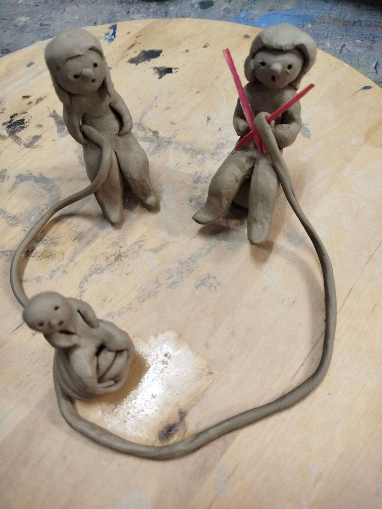
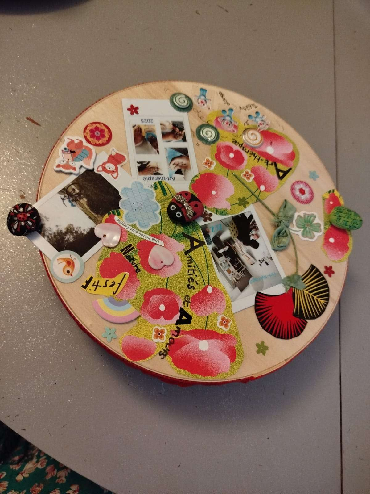
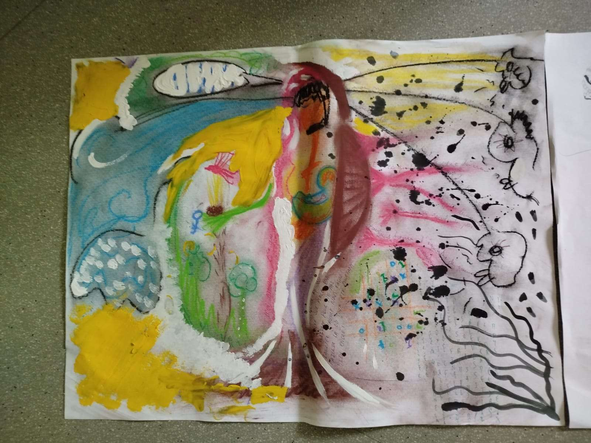
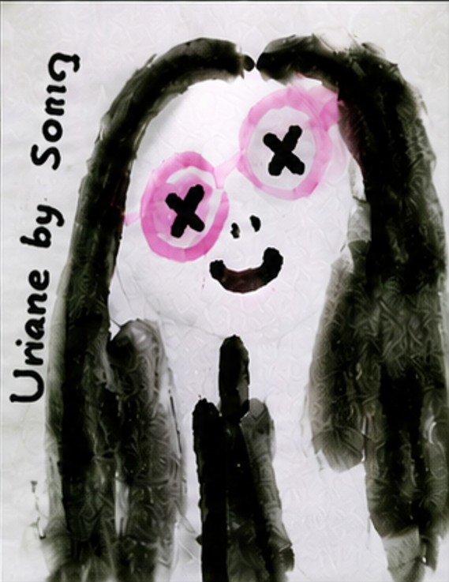

Utilisation des processus artistiques à des fins de mieux être en développant les capacités d'expression et de relationnel. Son objectif : permettre à la personne quel que soit son âge et son niveau, l'extériorisation de problématiques inconscientes ou difficilement verbalisables à travers la production d'objets plastiques et/ou de visuels (dessin, peinture, modelage, collage, danse, théâtre, écriture, musique …) Il n'est pas question d'esthétisme, ce n'est en effet pas la qualité de la production qui compte, aucun besoin d'avoir des connaissances ou des pratiques artistiques, mais bien plutôt ce qui se passe pendant la production et ce qui sort avec/et dans la production. En s'appuyant sur le processus créatif ainsi que sur la nature corporelle de l'art-thérapie (sans le corps et le mouvement, pas de geste ni de trace), il aide à la mise en œuvre du vécu, de l'imaginaire, et de son rapport au monde pour aller vers l'affirmation de soi – estime de soi et autonomie – et de ce fait vers l'inclusion. C'est une aide précieuse dans une démarche de connaissance de soi. Il convient aussi bien à la personne empêchée physiquement ou mentalement (porteur de trisomie 21, spectre autistique, troubles ou déficiences de l'attention et/ou du comportement, psychotique …) de par la communication non verbale, la possibilité d'exprimer son univers, l'enrichissement de son expression au fil des séances et l'apaisement des tensions physiques, pour tendre là aussi à l'inclusion. L'art-thérapie agit comme un révélateur de la nature du relationnel et de l’interaction entre les personnes. Et s'avère être un très bon outil pour l'analyse de pratique, ou pour travailler à la cohésion d'un groupe. L’art thérapeute est soumis au secret professionnel et ne divulgue pas ce qui se passe d'intime ou de personnel durant la séance. Il se peut que les productions fassent l'objet d'exposition, toujours avec l'accord de la personne. Viviane Sautereaux

Qu'est-ce que l'art-thérapie ?
vehicula urna sed justo bibendum
Vestibulum Convallis
vehicula urna sed justo bibendum
{kind=link}
{kind=link}
{kind=link}
{kind=link}

Pour Qui ?
À destination de structures, associations, groupements, qui travaillent avec du public : Crèche, Epad, IME, IMP, ESAT, Map, Centre social, centre d'animation, CCAS, Hôpital, Structure d'éducation etc … Elles peuvent être proposées au sein de différentes structures : Crèches et structures petite enfance ; Établissements scolaires ; Centres sociaux et centres d'animation ; CCAS ; Établissements et services médico-sociaux ; Établissements de santé ; Associations ; Structures d'accueil et d'accompagnement de publics fragilisés ; Toute structure souhaitant soutenir la santé mentale au travail, la cohésion d'équipe et le bien-être de ses professionnels. Les interventions peuvent être proposées à une équipe constituée, à un service spécifique ou à un groupe de professionnels réunis autour d'une problématique commune.

Retours
Curabitur eget semper ante. Morbi eleifend ultricies est, a blandit diam vehicula vel. Vestibulum porttitor nisi quis viverra hendrerit. Suspendisse vel volutpat nibh, vel elementum lacus. Maecenas commodo pulvinar dui, at cursus metus imperdiet vel.

Présentation de l'intervenante
Diplômée de l'École des Beaux-Arts de Bordeaux (DNAP), titulaire d'un DUT Carrières Sociales et formée à l'art-thérapie auprès de Créatéca…Mon parcours professionnel s'est construit dans les domaines de l'animation, de l'accompagnement et du développement social, au contact d'enfants, de jeunes, de familles et de publics fragilisés. Formée à l'art-thérapie auprès de Créatéca, j'ai développé une pratique qui s'appuie à la fois sur les processus artistiques, l'expression corporelle, la dynamique de groupe et la réflexion autour des pratiques professionnelles.Depuis de nombreuses années, je développe une pratique artistique personnelle à travers différents champs d'expression : arts plastiques, céramique, écriture, slam, théâtre, clown et expression corporelle. Cette diversité nourrit ma pratique d'art-thérapeute et me permet d'adapter les supports proposés aux objectifs de l'intervention, aux besoins des participants et à la dynamique propre à chaque groupe. Mon expérience de terrain me permet de connaître les réalités auxquelles sont confrontés les professionnels de l'accompagnement : charge émotionnelle, complexité des situations rencontrées, nécessité de coopérer au sein d'équipes pluridisciplinaires, évolution des besoins des publics accueillis. Cette double approche, artistique et sociale, me permet de proposer des interventions alliant expression, réflexion, ressourcement et soutien des équipes dans un cadre bienveillant, respectueux de chacun et adapté aux réalités institutionnelles. Art-thérapeute soumise au secret professionnel, je veille à garantir la confidentialité des échanges et le respect des personnes participant aux interventions.